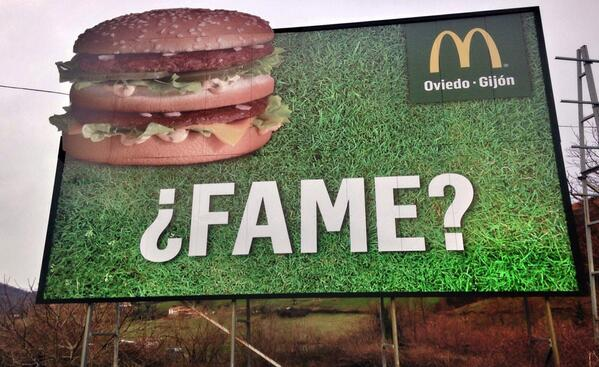

Texto
Esta situación de aprendizaje está dirigida al alumnado de 4º de Educación Secundaria Obligatoria (ESO) dentro del área de Lengua Castellana y Literatura, con posible vinculación interdisciplinar con Educación Plástica y Visual y Tecnología.
El objetivo principal es que el alumnado desarrolle una mirada crítica hacia la publicidad, analizando sus elementos lingüísticos y visuales, y sea capaz de crear sus propios mensajes publicitarios utilizando diferentes formatos y herramientas digitales.
Etapa educativa y nivel
Educación Secundaria Obligatoria (ESO), 4º curso.
Áreas, materias y/o módulos implicados
Lengua Castellana y Literatura
Educación Plástica, Visual y Audiovisual (opcional)
Tecnología/Digitalización (opcional)
Agrupamientos y organización espacial
Se trabajará mediante distintos tipos de agrupamiento, siguiendo los principios del DUA:
Trabajo individual (análisis de anuncios)
Trabajo en parejas (comentario y comparación)
Trabajo en pequeños grupos (creación de productos)
Gran grupo (puesta en común y reflexión)
El espacio se organizará de forma flexible, combinando el aula ordinaria con el aula de informática o uso de dispositivos digitales.
Temporalización
Duración estimada: 7-8 sesiones de 55 minutos
Sesión 1: Introducción a la publicidad
Sesión 2: Elementos del lenguaje publicitario
Sesión 3: Análisis de anuncios
Sesión 4: Diseño de la campaña publicitaria
Sesión 5: Creación de la infografía
Sesión 6-7: Elaboración del producto final (vídeo/podcast/videojuego/breakout)
Sesión 8: Presentación y evaluación
Productos que desarrollará el alumnado
A lo largo de la situación de aprendizaje, el alumnado elaborará:
Infografía interactiva sobre los elementos de la publicidad (incluyendo imágenes, texto y enlaces).
Producto final: vídeo. Deberá evidenciar la comprensión de los recursos persuasivos, el uso adecuado del lenguaje y la creatividad.
Herramientas tecnológicas y recursos
eXeLearning (presentación de contenidos)
Canva (infografías)
Genially (contenidos interactivos y breakout)
Audacity (podcast)
CapCut o iMovie (vídeo)
Otros recursos
Bancos de imágenes libres (ej: Pixabay)
Canales educativos de YouTube sobre publicidad
Ejemplos reales de campañas publicitarias

Texto
PRESENTACIÓN DE LA SDA AL ALUMNADO
¡Bienvenidos a la Publi-ciudad!
En nuestro día a día estamos rodeados de anuncios publicitarios que aparecen por todas partes.
¿Cómo vamos a proceder?
1. Comprobaremos nuestros conocimientos previos
2. Presentaremos la teoría sobre los textos publicitarios.
3. Veremos cómo se aplica esa teoría al análisis de un cartel.
4. Creación de una infografía-guía por parejas.
5. Se asignará un cartel para cada alumno y se procederá a un análisis con plantilla.
6. Revisión de los análisis en parejas (coevaluación y enriquecimiento) con tabla ampliada.
7. Redacción de un guion para la exposición final
8. Grabación de audio / vídeo con el análisis del cartel (Individual)
9. Coevaluación del producto final.
10. Reflexión (grupo-clase)
¿Qué se os evaluará?
1. Trabajo individual (rúbrica y observación del docente) + libreta
2. Producto intermedio: infografía (parejas) + email coevaluación (Individual)
3. Producto final: vídeo (individual)